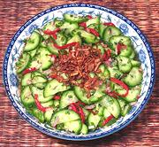

|
Thai Cucumber Salad #2Thailand | ||||
| Serves: Effort: Sched: DoAhead: |
4 salad * 20 min Yes |
A light. easy to make chilled salad perfect to accompany spicy dishes. In Thailand it is most often used not as a salad but as a relish to accompany other foods. For that use cut the cucumbers into pieces half the size shown here or smaller. | |||
|
1 3 10 2 6 ---- 1/4 2 1/2 3 ---- |
# oz --- c T t T ---- |
Cucumbers (1) Red Onion Mint Leaves Red Chili (2) Cilantro sprig -- Dressing Rice Vinegar Palm Sugar Salt Water -- Garnish (and/or) Roasted Peanuts (3) Fried Shallots (4) |
Do-Ahead - (25 min for either)
|